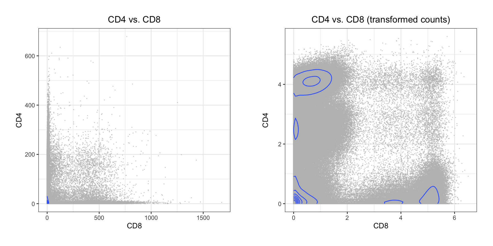
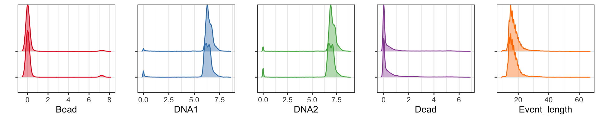
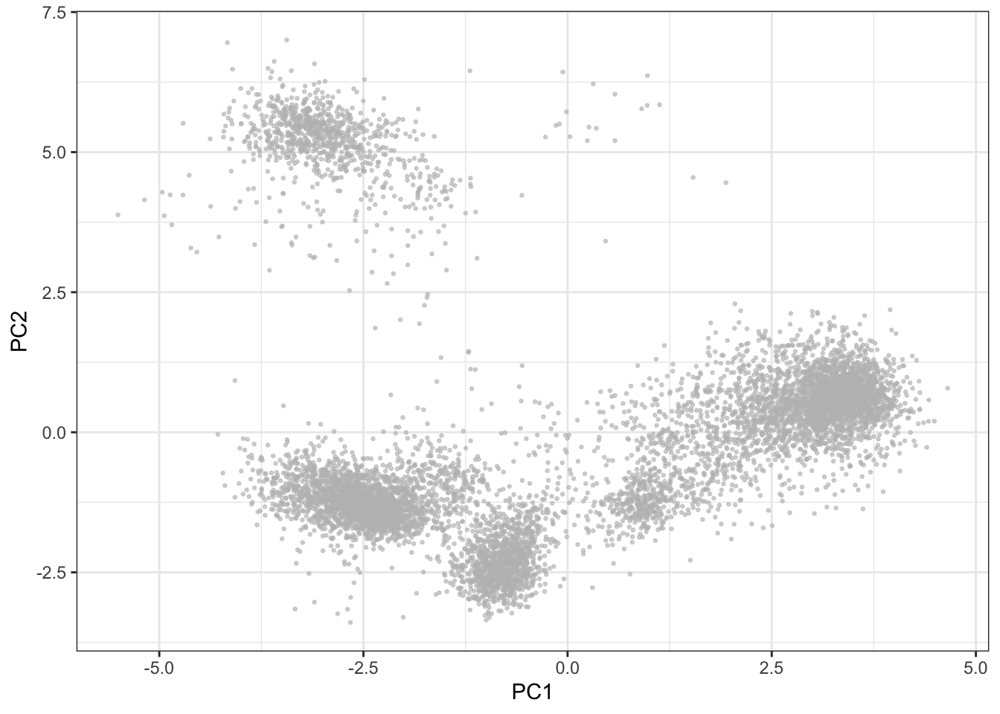
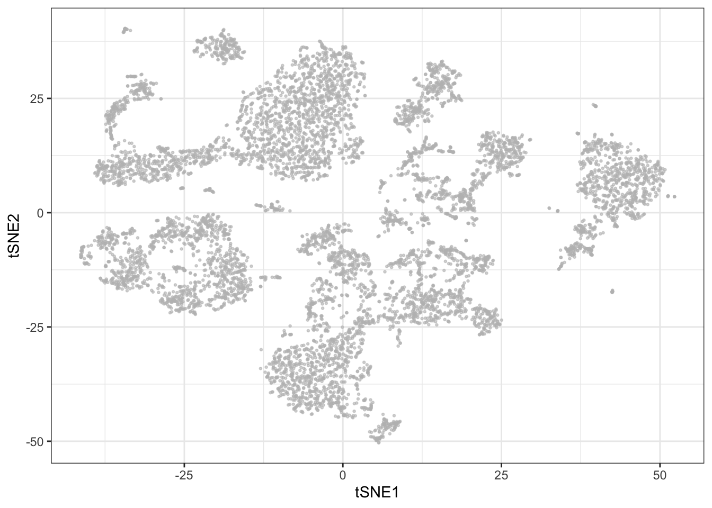
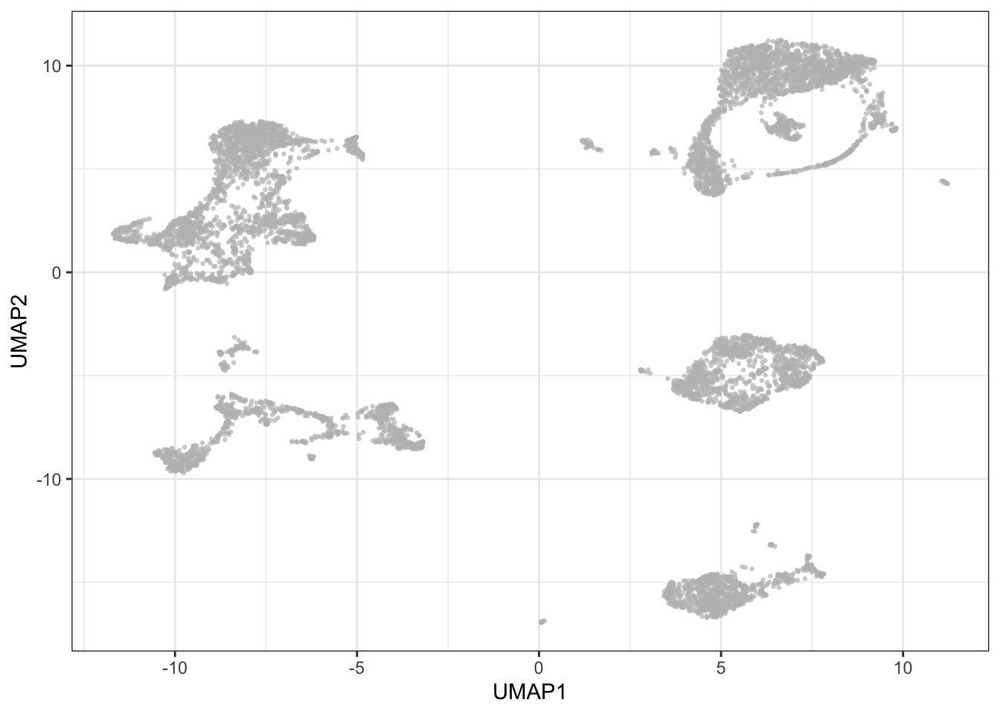
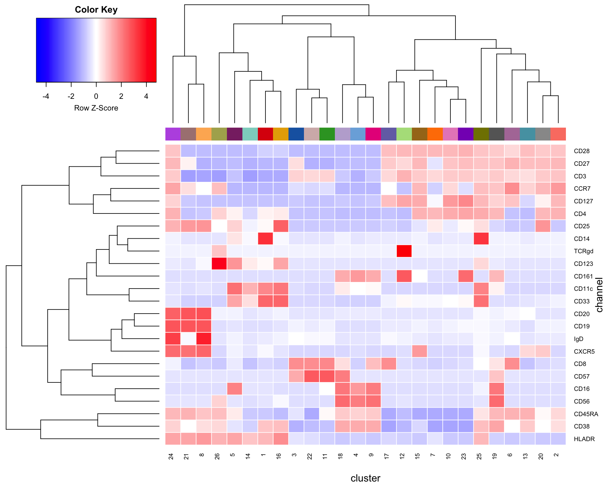
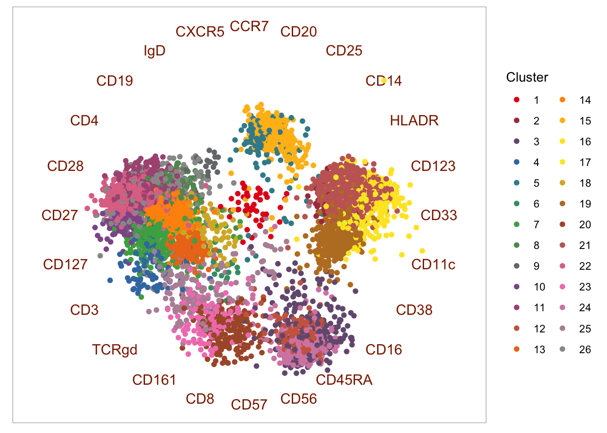

Data scientist’s primer to analysis of mass cytometry data
Contributors: Lars Rønn Olsen, Christina Bligaard Pedersen, Mike Leipold, and Holden Maecker
Preamble
The purpose of this site
The aim of this site is to introduce cytometry data - specifically mass cytometry data - to data scientists and bioinformaticians not familiar with the technology, the unique challenges relating to the technical and biological origins of the data. The content will be updated periodically as new tools and methods are published.
Along with discussions, we have included code for common processing and analysis tasks for R. Flow cytometry as a scientific discpline has been around for half a century at this point, and a plethora of software and data analysis packages has been created using a multitude of different programming languages. Common to the majority of them, is the heavy focus on the use of The Flow Cytometry Standard (FCS) format. While this format certainly has its strengths, it (and the analysis software developed for it) can seem somewhat convoluted to the uninitiated. Rather than attempting to update these packages for mass cytometry or introduce workarounds, we here focus on extracting and working with the raw expression matrices that most bioinformaticians know from other data types - such as for example transcriptomics (probe and sequence-based alike). The rationale is that once a bioinformatician has an expression matrix and a working understanding of the technical and biological idiosyncracies of the data, most, if not all, common analysis algorithms for expression data can be adapted and applied.
We will also present a selection of common analysis tools. Not with the explicit purpose of applying them in their packaged form, but to explain what goes on under the hood to enable these useful analyses to be applied in a more flexible and customizable way. The main aim here is enabling a high level of autonomy for data scientists working with mass cytometry data by dissecting both the data and common algorithms to its core workable components.
The site consists of a series of code snippets for preparing and analyzing the data. The entire collection of scripts without can be downloaded here. The examples are based on 21 FCS files from healthy control individuals (described below and available from flowrepository). Save the files locally and replace the paths in the code below to work with the example data or use your own data.
The example data sets
Healthy donor samples
21 samples of PBMC from healthy control individuals, stained with the Leipold and Maecker 2015 protocol, mixed with EQ normalization beads (Fluidigm Corp), and acquired on a Fluidigm CyTOF Helios mass cytometer using default acquisition parameters. The data exists in two forms: 1) the raw FCS files as generated by the Helios, 2) the samples normalized using the MATLAB method (described in section 2.1) - these are files with “normalized” in the file name. Each row in the expression matrix is an event, of which we are only interested in those that represent live, intact, singlet cells (i.e. we want to filter out beads, dead cells, doublets, debris, etc.). Each column contains information about the cells - some are parameters from the data collection by the instrument (e.g. event length, time, etc.), some are markers primarily used for pre-gating (DNA stain, live/dead stain, beads, etc.), some are lineage markers (needed to determine the cell type), and some are activation or cell state makers. Here is a table with descriptions of each column in the example expression files.
| Isotope | Parameter | Description |
|---|---|---|
| Ce140Di | Bead | Normalization parameter isotope unique to Fluidigm EQ normalization beads; used to distinguish them from cells during gating |
| In115Di | Dead | Pre-gating parameter Maleimide-DOTA small molecule as live-dead (cannot efficiently enter cells with undisturbed membranes) |
| Ir191Di | DNA1 | Pre-gating parameter DNA intercalator (intact cells have high levels) |
| Ir193Di | DNA2 | Pre-gating parameter DNA intercalator (intact cells have high levels) |
| Nd142Di | CD19 | Lineage marker B cell marker |
| Nd146Di | IgD | Lineage marker B cell marker |
| Dy164Di | CD20 | Lineage marker B cell marker |
| Nd143Di | CD4 | Lineage marker T cell marker |
| Nd144Di | CD8 | Lineage marker T cell marker |
| Nd148Di | CD11c | Lineage marker used to gate mDCs |
| Sm149Di | CD16 | Lineage marker used mostly to gate NK cells |
| Nd150Di | CD3 | Lineage marker used to gate T cells |
| Sm154Di | CD14 | Lineage marker used to gate Monocytes |
| Gd155Di | CCR6 | Lineage marker used to gate Th1/Th2/Th17 cells |
| Gd158Di | CXCR5 | Lineage marker used to gate T follicular helper cells |
| Tb159Di | CXCR3 | Lineage marker used to gate Th1/Th2/Th17 cells |
| Gd160Di | CCR7 | Lineage marker used to gate Naive/Central memory/Effector memory/Effector T cells |
| Dy162Di | CD45RA | Lineage marker used to gate Naive/Central memory/Effector memory/Effector T cells |
| Ho165Di | CD127 | Lineage marker used to gate Tregs |
| Er166Di | CD33 | Lineage marker used to gate Monocytes |
| Er168Di | CD24 | Lineage marker used to gate Transitional B cells |
| Yb171Di | TCRgd | Lineage marker used to gate gamma-delta T cells |
| Yb173Di | CD123 | Lineage marker used to gate basophils and pDCs |
| Yb174Di | CD56 | Lineage marker used to gate NK cells and NKT cells |
| Yb176Di | CD25 | Lineage marker used to gate Tregs |
| Lu175Di | HLADR | General protein marker activation marker on NK and T cells |
| In113Di | CD57 | General protein marker differentiation marker found on CD8+ T cells and NK cells |
| Yb172Di | PD-1 | General protein marker found on T cells, modulates immune function |
| Tm169Di | ICOS | General protein marker found on T cells, modulates immune function |
| Er170Di | CD161 | General protein marker marker of IL17 producing T cells |
| Er167Di | CD28 | General protein marker found on T cells, necessary for immune activation |
| Gd156Di | CD94 | General protein marker found on CD8+ T cells and NK cells, modulates immune function |
| Gd157Di | CD86 | General protein marker found on T cells, necessary for immune activation and survival |
| Eu151Di | CD38 | General protein marker found on T cells, B cells, and NK cells, necessary for immune function |
| Sm152Di | CD27 | General protein marker found on B and T cells, involved in modulation and activation of immune function |
| Eu153Di | CD11b | General protein marker found on cell of the innate immune system |
| Sm147Di | CD85j | General protein marker found on T cells, regulates immune activation |
| BCKG190Di | 190BCKG | Background not used in gating |
| Pb208Di | 208Pb | Background not used in gating |
| Sn120Di | 120Sn | Background not used in gating |
| I127Di | 127I | Background not used in gating |
| Xe131Di | 131Xe | Background not used in gating |
An R data object with the pre-processed healthy control samples (normalized, pre-gated, transformed - the entire process is detailed below) can be downloaded here if you are mostly interested in post-processing analyses. If so, you may skip to section 3.
### Case/control samples To exemplify analysis of differential abundance, we also use a case/control dataset. We here use the data described by Bodenmiller et al. (2012), which consists of 8 samples of PBMC responding to B-cell receptor (BCR)/Fc receptor (FCR) cross-linking and 8 control PBMC samples. The raw data can be downloaded here (download the files with “reference” and “BCR-XL” in the filename). These data are pregated and transformed. Alternatively, the data is included in the HDCytoData R package and can be loaded directly in R.
## Installing the R packages you will need We use a variety of packages for the analyses below. In case you are missing some of them, here’s what you will need:
## From CRAN
cran_packages <- c("scales", "ggplot2", "dplyr", "ggridges", "RColorBrewer", "MASS", "Rtsne", "kohonen", "miscTools", "gplots", "Radviz", "igraph", "statmod", "devtools", "uwot", "cowplot", "limma")
#install.packages()
## From BioConductor
bioc_packages <- c("flowCore", "ConsensusClusterPlus", "cydar", "flowCL", "CATALYST", "ncdfFlow", "edgeR", "HDCytoData")
# if (!requireNamespace("BiocManager", quietly = TRUE))
# install.packages("BiocManager")
# BiocManager::install()
## From source
github_packages <- c("nolanlab/cytofCore", "JinmiaoChenLab/cytofkit", "cytolab/mem")
#devtools::install_github()The R session info is located at the bottom of the page.
The structure of data from the CyTOF system
The following sections include lots of code snippets you can use in your CyTOF workflow.
The Flow Cytometry Standard (FCS) format
The FCS format is a binary data file standard originally developed for storage of flow cytometry data. As well as the ion count matrix, it has slots for experiment information, channel information, etc. Traditionally, ion counts have been analyzed visually using FlowJo - a commercial software platform for analysis of single-cell cytometry experiments. FlowJo is largely GUI-based and requires a license for both academic and non-academic users. For more automated analysis, the following tools for R can be used to import, manipulate and convert FCS files - or extract the ion counts for downstream analysis in R or other programming environments.
- flowCore: facilitates many FCS file related functions. Includes the option to write new FCS files.
- flowStats: package for normalizing, gating, and basic and advanced analyses of flow cytometry data.
- cytofCore: contains a function to merge FCS files from disrupted CyTOF runs.
- CATALYST: contains functions for normalization, debarcoding, and quality control.
Example of basic FCS file handling:
# Load the flowCore package
library(flowCore)
# Read an fcs file - remember to set the directory
fcs_files <- list.files(path = '~/fcs_files/', pattern='.fcs$', full=TRUE, ignore.case = TRUE)
fcs <- read.FCS(filename=fcs_files[1], transformation=FALSE)
# Extract expression matrix
exprs <- fcs@exprs
# Explore the channels (columns in the expression matrix)
fcs@parameters@data
# Make colnames human readable using information in the parameter data slot
markers <- gsub(pattern = ".*_", replacement = "", x = as.vector(fcs@parameters@data$desc))
colnames(exprs)[which(!is.na(markers))] <- markers[which(!is.na(markers))]
# Merging fcs files (in case of interrupted runs)
# library(cytofCore)
# cytofCore.concatenateDirectoryFiles(inputDir="./", outputDir=".", pattern=NULL, overwrite=F, timeParam="time")Parameter harmonization
Note that these channels are freetext editable in the Fluidigm CyTOF software. This means that if you are dealing with files from multiple different runs from different instruments and/or different operators (or in some cases even different staining panels), you will need to harmonize your channel names to compare samples. The mass information (in the “name” column) is usually the most reliable, but even here errors can occur. When in doubt, consult with the operator before renaming the channels.
Data preprocessing
Preprocessing is essential in any mass cytometry analysis process. Key steps in preprocessing include: bead normalization, in which one adjusts for varying instrument performance over time; pre-gating, in which live intact singlet cells are obtained; compensation, which (if applicable) is used to correct for spillover between the signals of different heavy metal isotopes, and debarcoding, which (if applicable) is used to separate different samples in a multiplexed experiment.
For convenience, we here define the different types of channels (columns in the data matrix) used for different purposes:
pregating_channels <- c("Bead", "DNA1", "DNA2", "Dead", "Event_length")
lineage_channels <- c("CD57", "CD19", "CD4", "CD8", "IgD", "CD11c", "CD16", "CD3", "CD38", "CD27", "CD14", "CXCR5", "CCR7", "CD45RA", "CD20", "CD127", "CD33", "CD28", "CD161", "TCRgd", "CD123", "CD56", "HLADR", "CD25")
instrument_channels <- c("Time", "Event_length", "Center", "Offset", "Width", "Residual")
## Bead Normalization {#beadnorm} Because CyTOF instrument performance may vary over time (both within a single run, but more prominently between different runs), it is important to normalize data in a way that limits the impact of the technical variation. The most commonly employed methods are the Fluidigm normalization (DVS Sciences, 2013) and MATLAB normalization (Finck et al., 2013). Both methods are based on adding beads carrying different heavy metal isotopes to the biological sample, and relying on the beads to leave an extractable signature that can be used to correct signal fluctuations. The Fluidigm normalization method uses a bead “passport” to normalize data to a global standard, while the MATLAB method normalizes using median bead intensities calculated across given experimental data files (e.g. files from different runs on the same machine).
Fluidigm bead normalization
The Fluidigm bead normalization method is based on the calculation of the mean isotope counts of the beads during production. This global bead profile, called the “Bead Passport”, is unique to each lot of beads synthesized and cannot be adjusted by the user. The first step in the normalization process is for the software to distinguish the beads from the cell sample in question. This is performed using all the major isotopes of the beads (Ce140, Eu151, Eu153, Ho165, and Lu175 for the current Fluidigm EQ beads). The normalization factor is calculated as the ratio between the Bead Passport and the measured counts for each of the beads. The bead channels span a large range of the mass spectrum, and using linear interpolation to masses between or beyond the bead masses allows for the calculation of normalization factors that are then multiplied to each remaining mass channel distributed across the course of the run using the time stamp. This allows for correction of decline in instrument sensitivity during the course of running a sample, and also normalization across samples (see figure below). However, if the instrument used to acquire a sample differs from the Bead Passport in overall signal intensity or in sensitivity across the mass range, the Fluidigm normalization will “force” the sample data to conform to the shape and signal of the Passport (see Figure 4, especially CyTOFv1 red line).
MATLAB bead normalization (Finck et al.)
The MATLAB implemented normalization algorithm created by Finck et al. (2013) works by modelling the sample specific drift in count reporting. Briefly, bead singlets are manually identified by biaxial gating of each of the five bead channels against a DNA channel. The intensities of each bead channel over the course of a sample run, are smoothed by calculating local medians in a 500 bead event sliding window. Then, a baseline is calculated by taking the mean of the smoothed intensities for each bead channel. For each bead channel, for each time point, the slope of the linear regression from the channel origin to the given time point is calculated, such that the residual sum of squares between the smoothed bead intensities and the baseline is minimized. For each recorded event, the intensity is multiplied by the slope of corresponding the time point at which is was recorded. Since the MATLAB normalization compares each file to the other files rather than to an externally-determined set of values, there is typically less “forcing” or reshaping of the data than in Fluidigm normalization (see figure below).

The effects of normalization on Raw data
The effects of normalization on Raw data is shown above. Replicate samples were stained, then pooled and split into individual aliquots before freezing in FBS+10% DMSO at -80°C as Takahashi et al. On each day, the sample was thawed on ice, washed 3x in MilliQ water, then resuspended in MilliQ water containing Fluidigm EQ beads and acquired on the indicated CyTOF instrument model. The CyTOFv2 was later upgraded to the v2-to-Helios instrument and another aliquot was run. During data analysis, the EQ beads were gated separately from the cells. The linear y-axis represents the Median Di Dual signal intensity of the indicated mass channel: the Bead data is shown in the top row, while the Cell data is shown on the bottom row (marker on indicated cell population). While the Beads and Cells cover a similar mass range, the signal intensity of the Cells on a specific instrument changes depending on the normalization method (Raw vs. Fluidigm-ver2 vs. MATLAB).
It should be noted that although the bead normalization is useful for adjusting for signal changes due primarily to the instrument performance, it does have some limitations. First, there may be some decrease in signal intensity in the sample that is not reflected in the bead signal. For example, while proper fixation does generally allow cells to withstand the osmotic force of MilliQ water, users have reported decreases in signal intensity during acquisition of large volume barcoded samples. Since the beads are not affected by lengthy suspension in water, the bead signals would not change in the same way that cell signals may. Generally, samples fixed with paraformaldehyde seem more robust than those fixed only with commercial fix/perm solutions. Additionally, samples are typically more stable as pellets. Therefore, this sample signal decrease can often be limited by breaking one large sample into aliquots that would each make 3-5 mL of diluted sample, and only resuspending the pellet of each aliquot shortly before collection. Second, since the beads are not stained with the assay reagents, they are seldom sufficient for true plate-to-plate batch correction, particularly over long periods of time when reagent lots could change.
Performing bead normalization
Because the MATLAB method is more commonly used in practice, it is the focus on this wiki. The MATLAB normalization method is implemented with a graphical user interface (GUI), in which the user manually gates the beads using five different bi-axial plots in which each bead metal is plotted against the iridium channel (that measures DNA). This can be installed from here.
While wet lab scientists are accustomed to working with manual gating and GUIs, such as the one in the MATLAB normalization program, this is not the preferred method for data scientists such as bioinformaticians, who commonly wish to analyze a large number of samples, making manual gating very cumbersome. CATALYST has enabled this now, but before that was possible, we implemented the MATLAB normalization algorithm in R, such that it may be called from the command-line and run completely without user interference. This process was carried out by translating the MATLAB source code (available from here) and making small alterations. The R version can be downloaded from our Github repository.
The biggest change from the original version is the fact that bead gating is carried out automatically in the R version using a Support Vector Machine (SVM), which was trained for this specific purpose, using the signals of five bead channels and the DNA channel for a total of seven data sets, for which beads had been gated manually by an experienced wet-lab scientist. The SVM was trained in R using svm from the e1071 package. The training data was seven samples, each comprising of 250,000 events, of which 4,068-8,715 were defined as beads. The data for each metal channel had been transformed using the formula ArcSinh(data)/c, in which c = 2 for CyTOF Helios data, and furthermore, each metal channel was normalized to values between 0 and 1 for the SVM training, to ensure maximal comparability between different samples. Consequently, new data to be classified using the developed SVM model should be transformed and normalized before “gating” - this is of course incorporated in the developed script. In order to evaluate the performance, a single-layer cross-validation setup was used, because a preliminary run on a smaller subset using a “out-of-the-box” SVM with a radial kernel, turned out to work satisfactory (mean accuracy of 99.997 %, with a mean precision of 99.920 %, and a mean recall of 99.971 %). The training was carried out using a leave-one-out method, in which six data sets was used for training and one data set was used for testing in each round. This should allow for an unbiased performance measure. Based on the obtained results the model was deemed acceptable, and all data sets were used to train a final model that can be used for future bead-normalization tasks - the developed R script requires this final model to run. Because the seven training samples for the SVM were all from the CyTOF Helios platform, and they all used EQ beads with the five bead isotopes, 140Ce, 151Eu, 153Eu, 165Ho, and 175Lu, the developed method in R only works for data obtained using the EQ beads on a Helios instrument. However, it could potentially easily be extended to handle other data types - it merely requires some training data to develop the proper SVM for gating the given data set type.
Data transformations
Dealing with “randomized” values
When an FCS file is exported by the Helios, non-zero values are randomized negatively and uniformly (]x-1;x]). This means that a count of, for example, 9 will be evenly distributed between 8 and 9 for each channel, for each event. This is mostly done for historical reasons, as visualizing count data from the CyTOF produce different plots than intensity data (from flow cytometers). Randomization is done (by default) during conversion of IMD to FCS by the Fluidigm software. Randomized counts can be converted back to the original value by rounding every decimal up to the nearest whole number.
# Check if counts are randomized (expression matrix should only contain integers)
is.wholenumber <- function(x, tol = .Machine$double.eps^0.5) abs(x - round(x)) < tol
table(is.wholenumber(exprs[,c(pregating_channels, lineage_channels)]))##
## FALSE TRUE
## 4726283 2523717# You may revert back to original counts (only applicable to measured channels - i.e. exclude time, event length, etc.)
exprs_derandomized <- cbind(ceiling(exprs[,c(lineage_channels, pregating_channels[1:4])]), exprs[,instrument_channels])For multidimensional analysis this is definitely recommendable not to add unnecessary noise to the data, but for the purpose of the 2D visualizations we are doing for pre-gating, we will leave the randomized counts for now.
ArcSinh transformation
Commonly, mass cytometry ion counts will be ArcSinh transformed - this transformation will retain linearity in the low end of the count spectrum, but it resembles a log transformation in the high end. If counts are divided by a co-factor before the transformation, the range of ion counts for which linearity is retained may be adjusted. For CyTOF data, a co-factor of 5 is typically used. Transformations are done primarily for visualization purposes and co-factors are empirically determined. In some cases, adjusting co-factors slightly may improve visualizations.
Continuing from the above code snippet for loading an FCS, the data may be ArcSinh-transformed as follows:
library(MASS)
library(RColorBrewer)
library(ggplot2)
library(cowplot)
# Set co-factor
cofac <- 5
# Make arcsinh transformed expression matrix (with the exception of time and event_length, which should remain linear)
exprs_trans <- cbind.data.frame(asinh(exprs[,c(lineage_channels, pregating_channels[1:4])]/cofac), exprs[,instrument_channels])
# Plot two-marker example of transformation effect
p1 <- ggplot(as.data.frame(exprs), aes(x = CD8, y = CD4)) +
geom_point(color = 'grey', size = 0.05, alpha = 0.6) +
geom_density2d() +
ggtitle('CD4 vs. CD8') +
theme_bw() +
theme(plot.title = element_text(hjust = 0.5))
p2 <- ggplot(exprs_trans, aes(x = CD8, y = CD4)) +
geom_point(color = 'grey', size = 0.05, alpha = 0.6) +
geom_density2d() +
ggtitle('CD4 vs. CD8 (transformed counts)') +
theme_bw() +
theme(plot.title = element_text(hjust = 0.5))
plot_grid(p1, p2, align = 'v', scale = 0.9)
Both the classic Logicle transformation and ArcSinh works by compressing values in the upper end of the spectrum and enhancing the resolution on the lower end:

Logicle vs arcsinh transformation
When plotting the variation for each marker before and after transformation, the difference is quite clear:

The effect of transformation on data distribution
Pre-gating
Pre-gating has the purpose to filter the data to consist only of live, intact, single cells. Traditionally, this is carried out in four steps, carried out for each sample. There are number of ways one can semi or fully automate this process (using unsupervised or supervised machine learning for instance), but for clarity we will perform “old school” pre-gating below - sped up by pre-gating all samples in one go (insofar as samples are comparable to a degree that enables this). In the following sections, we will work on all the samples as a single object, so first we reload the data into a data.frame.
library(flowCore)
# Read in your normalized files and concatenate in a data frame (in this example we subset each matrix to 10,000 random events)
# Remember to set working directory to the normalized samples
fcs_files <- list.files(path = "~/fcs_files/", pattern='.fcs$', full=TRUE, ignore.case = TRUE)
exprs_set <- data.frame()
sample <- c()
for (i in fcs_files) {
fcs <- read.FCS(filename=i, transformation=FALSE)
exprs <- fcs@exprs
markers <- gsub(pattern = ".*_", replacement = "", x = as.vector(fcs@parameters@data$desc))
colnames(exprs)[which(!is.na(markers))] <- markers[which(!is.na(markers))]
exprs_set <- rbind(exprs_set, exprs[sample(nrow(exprs), 10000),])
sample <- append(sample, rep(i, 10000))
}
exprs_set$sample <- sample
instrument_channels <- append(instrument_channels, "sample")
# Make arcsinh transformed expression matrix (excluding channels that should remain linear - e.g. time, event length, etc.)
cofac <- 5 # For CyTOF data, the co-factor is set to 5
exprs_set_trans <- cbind(asinh(exprs_set[,c(pregating_channels[1:4], lineage_channels)]/cofac), exprs_set[,instrument_channels])Batch correction
Insofar as all samples are run on the same instrument, with the same panel, by the same operator, and bead normalized together, it should be possible to avoid pre-gating all your samples one at the time, and rather doing it in one go. You may check that the distributions of bead, DNA, and live/dead measurements are somewhat similar:
library(RColorBrewer)
library(ggplot2)
library(ggridges)
library(cowplot)
cols <- brewer.pal(5,'Set1')
p <- list()
for (c in 1:length(pregating_channels)) {
p[[c]] <- ggplot(as.data.frame(exprs_set_trans), aes_string(x = pregating_channels[c], y = "sample")) +
geom_density_ridges(color = cols[c], fill = alpha(cols[c], 0.4)) +
theme_bw() + theme(axis.text.y=element_blank()) + ylab("")
}
plot_grid(plotlist = p, ncol = 5)
As can be seen all five pre-gating channels are largely comparable in all samples, and batch correction is not necesarry for pre-gating.
In case your data doesn’t look quite as nice (these samples were run on the same instrument, by the same operator, during the course of a single day), you can correct for batch effect channel-by-channel using a range based approach (basically a linear alignment of densities) or a warping normalization that enables non-linear adjustments to individual peaks in the data (frequently referred to as landmarks).
First, let’s construct an example:
# Create two toy batches of bimodal densities (the cydar packages only takes lists of lists as input)
batches <- list()
x <- list()
ex <- matrix(c(rnorm(500,2,1), rnorm(500,25,2)), ncol=1)
colnames(ex) <- "CDx"
x[["sample_Y"]] <- ex
batches[["Batch1"]] <- x
ex <- matrix(c(rnorm(500,2.1,1.1), rnorm(500,15,2)), ncol=1)
colnames(ex) <- "CDx"
x[["sample_Y"]] <- ex
batches[["Batch2"]] <- x
# Plot the marker distributions
plot(density(batches$Batch1$sample_Y), main="uncorrected samples", ylim=c(0,0.11))
points(density(batches$Batch2$sample_Y), type="l", col="red")
The distributions are clearly unaligned and we will need to correct for this before we can analyze them together:
# Run the normalization
library(cydar)
corrected <- normalizeBatch(batches, batch.comp = NULL, mode="warp")
# Plot the results
plot(density(corrected$Batch1$sample_Y), main="batch corrected samples")
points(density(corrected$Batch2$sample_Y), type="l", col="red")
Voila.
Channel-by-channel correction should be performed with care. A common source of noise is the stability (or lack thereof) of the antibody cocktail. In practice, this means that in one sample, a given channel can be virtually noise-free, whereas in another, noise can be introduced into that very channel - even if the same antibody cocktail is used. When warping such two channels to be comparable without a priori knowledge about what is noise and what is signal, one is basically making the noise comparable by “contaminating” the noise free sample.
Tools for system-wide batch correction are available. For example, the distribution-matching residual networks approach. However, the code for this tool is not yet available in an implementation-ready form. Python scripts are found here, but issues like the example data being hard coded as the input data in the main script, prevents easy implementation of this otherwise interesting method.
If none of this does help on your data (this is obviously an oversimplified example), one solution is to analyze your samples individually and then compare the results. Batch correcting mass cytometry data is definitely non-trivial, and a method for modeling and removing system-wide as well as channel-specific noise has yet to see the light of day.
Gating for cells (beads vs. DNA)
The first step is to gate out beads, cell/bead dobulets, and debris. This is done by generating a biaxial plot with a DNA channel (e.g. 191Ir) on one axis and a bead-only isotope (140Ce) on the other. A single bead should be DNA-negative and 140Ce-positive, and cells should be DNA-positive and 140Ce-negative. Double negatives are considered to be debris and double positives are commonly doublets. Below is a code snippet for conducting this step after initializing as described above.
# Load necessary packages
library(ggplot2)
library(MASS)
# Generating a plot for gating visualization
p <- ggplot(exprs_set_trans, aes(x = Bead, y = DNA1)) +
geom_point(color = 'grey', size = 0.05, alpha = 0.6) +
geom_density2d(h = max(bandwidth.nrd(exprs_set_trans[,'Bead']), bandwidth.nrd(exprs_set_trans[,'DNA1']))) +
theme_bw()
# Set gate boundaries - the values should be manually adjusted
left <- 0; right <- 2.5; lower <- 5; upper <- 8.5
# Gating cells
cells <- exprs_set_trans[exprs_set_trans[,"Bead"] < right,]; cells <- cells[cells[,"DNA1"] > lower & cells[,"DNA1"] < upper,]
# Add gate to plot
p + geom_rect(xmin = left, xmax = right, ymin = lower, ymax = upper, fill = NA, linetype = 1, color = 'red') +
annotate('text', x = right + 1, y = mean(c(lower, upper)), label = paste("Cells: ", round((nrow(cells)/nrow(exprs_set_trans))*100, digits=2), "%", sep=""), color = 'red')
Gating for intact cells (DNA1 vs DNA2)
The second step is to gate for intact cells - usually by generation a bixaial plot with the two DNA channels (191Ir and 193Ir) and gating for events, which express both at a balanced level. If events express only little DNA it is likely debris, but if DNA expression is too high, they are likely cell doublets.
# Gene rating a plot for gating visualization
p <- ggplot(cells, aes(x = DNA1, y = DNA2)) +
geom_point(color = 'grey', size = 0.05, alpha = 0.6) +
coord_cartesian(xlim = c(5,8), ylim = c(5.5,8.5)) +
geom_density2d() +
theme_bw()
# Set gate boundaries - the values should be manually adjusted
left <- 5.53; right <- 7.2; lower <- 6.1; upper <- 7.85
# Gating intact cells
intact <- cells[cells[,"DNA1"] > left & cells[,"DNA1"] < right,]; intact <- intact[intact[,"DNA2"] > lower & intact[,"DNA2"] < upper,]
# Add gate to plot
p + geom_rect(xmin = left, xmax = right, ymin = lower, ymax = upper, fill = NA, linetype = 1, color = 'red') +
annotate('text', x = right + 0.4, y = mean(c(lower, upper)), label = paste("Intact cells: ", round((nrow(intact)/nrow(cells))*100, digits=2), "%", sep=""), color = 'red')
Gating for singlets (event length vs DNA)
The third step is to gate out doublets more specifically. This can be done by biaxially plotting event length against a DNA channel and gating for the events which have a length within the range of most events.
# Generating a plot for gating visualization
p <- ggplot(intact, aes(x = Event_length, y = DNA1)) +
geom_point(color = 'grey', size = 0.05, alpha = 0.6) +
coord_cartesian(ylim = c(0,8)) +
geom_density2d() +
theme_bw()
# Set gate boundaries - the values should be manually adjusted
left <- 11; lower <- 5.4; right <- 24; upper <- 7.3
# Gating intact singlets
singlets <- intact[intact[,"Event_length"] > left & intact[,"Event_length"] < right,]
# Add gate to plot
p + geom_rect(xmin = left, xmax = right, ymin = lower, ymax = upper, fill = NA, linetype = 1, color = 'red') +
annotate('text', x = mean(c(left, right)), y = lower - 0.5, label = paste("Intact singlets: ", round((nrow(singlets)/nrow(intact))*100, digits=2), "%", sep=""), color = 'red')
Gating for live cells (live/dead stain vs DNA)
The final step is to remove dead cells. This is typically carried out by using a viability stain. This staining takes place before ligation of antibody-probes. Because dead cells have disrupted membranes, the stain can enter them and form bonds with intracellular molecules. The gating itself is carried out by biaxially plotting the viability stain and a DNA channel and gating out cells with a high amount of staining.
# Generating a plot for gating visualization
p <- ggplot(intact, aes(x = Dead, y = DNA1)) +
geom_point(color = 'grey', size = 0.05, alpha = 0.6) +
coord_cartesian(ylim = c(0,8)) +
geom_density2d() +
theme_bw()
# Set gate boundaries - the values should be manually adjusted
left <- 0; lower <- 5.4; right <- 4; upper <- 7.3
# Gating live intact singlets
live <- singlets[singlets[,"Dead"] < right,]
# Add gate to plot
p + geom_rect(xmin = left, xmax = right, ymin = lower, ymax = upper, fill = NA, linetype = 1, color = 'red') +
annotate('text', x = mean(c(left, right)), y = lower - 0.5, label = paste("Live intact singlets: ", round((nrow(live)/nrow(singlets))*100, digits=2), "%", sep=""), color = 'red')
Finally, you can print the recovery percentage for each sample and save the live intact singlets to a new FCS file if you need to.
for (i in fcs_files) {
print(paste("Total recovery for ", basename(i), ": ", round((nrow(live[live$sample==i,])/nrow(exprs_set_trans[exprs_set_trans$sample==i,]))*100, digits=2), "%", sep=""))
}## [1] "Total recovery for 081216-Mike-HIMC ctrls-001_01_normalized.fcs: 86.26%"
## [1] "Total recovery for 081216-Mike-HIMC ctrls-1213_01_normalized.fcs: 87.59%"
## [1] "Total recovery for 081216-Mike-HIMC ctrls-2385_01_normalized.fcs: 71.73%"
## [1] "Total recovery for 081216-Mike-HIMC ctrls-284d2_01_normalized.fcs: 69.29%"
## [1] "Total recovery for 081216-Mike-HIMC ctrls-3369_01_normalized.fcs: 79.62%"
## [1] "Total recovery for 081216-Mike-HIMC ctrls-423_01_normalized.fcs: 78.53%"
## [1] "Total recovery for 081216-Mike-HIMC ctrls-424_01_normalized.fcs: 73.54%"
## [1] "Total recovery for 081216-Mike-HIMC ctrls-447_01_normalized.fcs: 86.12%"
## [1] "Total recovery for 081216-Mike-HIMC ctrls-449_01_normalized.fcs: 83.78%"
## [1] "Total recovery for 081216-Mike-HIMC ctrls-458_01_normalized.fcs: 83.12%"
## [1] "Total recovery for 081216-Mike-HIMC ctrls-476_01_normalized.fcs: 85.84%"
## [1] "Total recovery for 081216-Mike-HIMC ctrls-481_01_normalized.fcs: 86.82%"
## [1] "Total recovery for 081216-Mike-HIMC ctrls-84-0001-01_01_normalized.fcs: 78.44%"
## [1] "Total recovery for 081216-Mike-HIMC ctrls-884_01_normalized.fcs: 83.43%"
## [1] "Total recovery for 081216-Mike-HIMC ctrls-885d1_01_normalized.fcs: 77.78%"
## [1] "Total recovery for 081216-Mike-HIMC ctrls-885d3_01_normalized.fcs: 83.48%"
## [1] "Total recovery for 081216-Mike-HIMC ctrls-885d4_01_normalized.fcs: 87.46%"
## [1] "Total recovery for 081216-Mike-HIMC ctrls-885d5_01_normalized.fcs: 88.64%"
## [1] "Total recovery for 081216-Mike-HIMC ctrls-891_01_normalized.fcs: 78.62%"
## [1] "Total recovery for 081216-Mike-HIMC ctrls-Pat03_01_normalized.fcs: 85.61%"
## [1] "Total recovery for 081216-Mike-HIMC ctrls-Pat05_01_normalized.fcs: 89.07%"# # Save FCS containing live intact singlets
# ff <- flowFrame(as.matrix(live[,1:(ncol(live)-1)]), fcs@parameters, fcs@description)
# suppressWarnings(write.FCS(ff2, filename = paste("./", file, "live_intact_singlets", sep=""), what="numeric", delimiter = "\\\\"))More automated options for pre-gating can be conceived. One option is to train a supervised model, such as a support vector machine, on a sample for which manual gating has already been carried out. However, in this case it is also necessary to normalize and batch correct the data for alignment of the distributions of the pre-gating channels.
Compensation
Compensation is a method for correcting signal overlap, or “spillover”, between the different channels used in cytomtetry experiments. While being an established method in flow cytometry, a recent study (Chevrier et al., 2018) highlight that mass cytometry experiments are also affected by signal spillover. This leads to noisy expression matrices, and as a consequence, compensation must be applied.
To perform compensation, you need to directly quantify the overlap between isotopes using beads (or cells) stained with a single isotope. Using these single-stained beads it is possible to estimate a spillover matrix from the populations identified as belonging to each isotope, and then one can apply the inverse of the matrix to compensate the data for CyTOF runs through multiplication.
The CATALYST tool offers an implementation of a compensation method, which views spillover as linear (traditional approach) and uses non-negative linear least squares to avoid yielding negative expression values. Additionally, their vignette is quite extensive and helpful.
But how can you tell if your data needs compensation? In reality this may be hard, but one approach could be to use a biaxial plot to look for unexpected correlations between channels in your dataset. E.g. you would usually not expect a correlation between a barcoding channel and a surface marker, but you may expect a correlation between two maturity markers or two activation markers. So if you see something like the leftmost plot below (which shows a barcoding vs. a marker channel), you have a strong indication that something is wrong. Fortunately, it can be corrected using CATALYST to yield the rightmost plot. For this dataset (which is one of our own), none of the single-stained beads were actually stained with 110Pd, and consequently any signal detected in this channel must be spillover.

Compensation example. Left: Uncompensated data with a large spillover from the Cd114 channel to the Pd110 channel. Right: Compensated data.
Debarcoding
A GUI implementation of the single cell debarcoder may be installed from here or here, but the CATALYST implementation may also be used without the GUI. However, it is still advisable to adjust the barcode separation cut-offs manually, and for this purpose it is necessary to plot the data. The original debarcoding paper was published by Zunder et al. (2013), and the basic principle is that you use combinations of palladium isotopes to label individual samples, which you can then pool and run together on the CyTOF machine to avoid technical variation. To separate the different samples, one must identify events for which the difference in the signal between the present and absent palladium channels is clear.
Data analysis
Dimensionality reduction
Principal component analysis
The most commonly used algorithm for dimensionality reduction in the biological sciences is principal component analysis (PCA). For mass cytometry data, a PCA will often capture 40-50% of the variance on the first 2-3 PCs, but since the distance between events is linear, data existing on a nonlinear manifold will be misrepresented (Chester & Maecker 2015). Whether this is an issue with CyTOF data or not depends heavily on the source of data. For example, as cells in the hematopoietic system develop in a hierarchical structure, the transition between some cells will result in a continuum rather than distinct clusters, which may not be entirely captured by PCA.
pca <- prcomp(live[live$sample==fcs_files[1],lineage_channels], scale. = TRUE)
ggplot(as.data.frame(pca$x), aes(x = PC1, y = PC2)) +
geom_point(color = "grey", alpha = 0.6, size = 0.5) +
theme_bw()
t-SNE
The t-Distributed Stochastic Neighbor Embedding (t-SNE) dimensionality reduction algorithm is a popular tool for dimensionality reduction of cytometry data (van der Maaten and Hinton, 2008). The distance between data points are represented by a t-distribution, meaning that multidimensional distances are preserved to a greater degree than PCA. However, there are a number of features of the algorithm that can lead to misinterpretation by the unaware user. For example, t-SNE (intentionally) does not preserve distances nor density, and it only preserves nearest-neighbors if reasonable hyperparameters are selected. This means that the sizes of the clusters are not always indicative of the variability within the cluster, and similarly, the distance between two clusters is not always proportional to how different they really are. In this regard, the algorithm is quite sensitive to the user making an informed choice of the perplexity and epsilon hyperparameters to reasonably represent the underlying structure of the data (See Martin Wattenberg et al.’s excellent blog post on how to use t-SNE efficiently.). Another feature that may be considered a disadvantage to some is that t-SNE depends on a random start and is non-deterministic even on the same data unless the same seed and iteration limit is used for each run. Additionally, removing or adding even a few data points from the input set will affect the layout of the remaining events, and consequently it is not directly possible to add samples to an existing t-SNE plot. Lastly, t-SNE does not allow for identical events, which, in the case of immune profiling where one would expect at least some identical cells in each cluster, means discarding or scrambling data. Dimensionality reduction definitely has a place in mass cytometry analysis pipelines, but for these reasons, it should be limited to exploratory and/or post-analysis visualizations. t-SNE is implemented in a number of languages including R, Python, C++, etc., and as a plug-in to FlowJo X. The MATLAB implementation of t-SNE often used for mass cytometry data in GUI pipelines is referred to as viSNE (Amir et al., 2013).
Before running t-SNE, it is necessary to remove identical events (if any) from the sample (duplicate rows).
##
## FALSE
## 8626# No duplicates here, but if so, they can be removed:
live <- live[!duplicated(live[live$sample==fcs_files[1],lineage_channels]),]library(Rtsne)
set.seed(42)
tsne <- Rtsne(live[live$sample==fcs_files[1],lineage_channels])
ggplot(as.data.frame(tsne$Y), aes(x = V1, y = V2)) +
geom_point(color = "grey", alpha = 0.6, size = 0.5) +
xlab('tSNE1') + ylab('tSNE2') +
theme_bw()
Even before clustering, it is possible to get some sense of the cell composition in a sample by selectively coloring cells by marker expression on the t-SNE plot:
library(reshape2)
sub <- cbind.data.frame(live[live$sample==fcs_files[1],], tsne$Y); colnames(sub)[(ncol(sub)-1):ncol(sub)] <- c('tSNE1', 'tSNE2')
p <- list()
for (c in c("CD4", "CD8", "CD19", "CD56")) {
p[[c]] <- ggplot(sub, aes(x = tSNE1, y = tSNE2)) +
geom_point(aes_string(color = c), size = 0.5) +
theme_bw()
}
plot_grid(plotlist = p, ncol = 2)
UMAP
Uniform Manifold Approximation and Projection (UMAP) is a newer addition to the family of CyTOF-applicable dimensionality reduction methods (Becht et al., 2018). It works in a fashion that is more similar to t-SNE than PCA, which means that it also views each cell as a member of a neighborhood of similar cells. However, it has several advantages over t-SNE. The first one is speed. For a small dataset there may not be a significant difference, bu you will surely notice it for a million cells. Furthermore, UMAP preserves global distances in the data a lot better than t-SNE. Recall that distances have no meaning in a t-SNE plot - you can not say anything about how different clusters are with t-SNE and distances between clusters tend to be fairly constant. In UMAP plots, distances once again have meaning, although they are not linear and directly interpretable as for PCA.
UMAP, like t-SNE also requires setting a seed for each run to make it reproducible. UMAP is implemented in several languages including R and Python.
library(uwot)
set.seed(758)
umap <- umap(live[live$sample==fcs_files[1],lineage_channels], n_neighbors = 15, min_dist = 0.2, metric = 'euclidean')
ggplot(as.data.frame(umap), aes(x = V1, y = V2)) +
geom_point(color = "grey", alpha = 0.6, size = 0.5) +
xlab('UMAP1') + ylab('UMAP2') +
theme_bw()
Again, it is possible to get a pretty good insight into cell composition in a sample by selectively coloring cells by marker expression on the UMAP plot - you will also notice how this is similar to the patterns seen with t-SNE:
sub <- cbind.data.frame(live[live$sample==fcs_files[1],], umap); colnames(sub)[(ncol(sub)-1):ncol(sub)] <- c('UMAP1', 'UMAP2')
p <- list()
for (c in c("CD4", "CD8", "CD19", "CD56")) {
p[[c]] <- ggplot(sub, aes(x = UMAP1, y = UMAP2)) +
geom_point(aes_string(color = c), size = 0.5) +
theme_bw()
}
plot_grid(plotlist = p, ncol = 2)
Cell subset detection (clustering)
Deconvoluting a cell mixture may be a goal in itself, and certainly a necessity for meaningful comparison of samples or cell populations whether transversal or longitudinal. The traditional approach relies on manual gating on biaxial plots, but as the number of features are increased, the manual strategy becomes increasingly laborious. A number of methods are therefore seeking to automate or semi-automate the process - not only in the interest of speed, but unsupervised methods may also reveal cell populations overlooked when following standard gating strategies.
Automated strategies are usually based on some form of clustering. Since the hematopoietic continuum is a cellular hierarchy, the obvious first choice is simply hierarchical clustering. However, this method is by some considered suboptimal, usually ascribed to the need to manually select the number of clusters based on a distance cutoff in the resulting dendrogram. This forces the user to guess the number of populations in the sample: selecting too many will over-separate the data into meaningless small clusters; selecting too few will agglomerate smaller, but potentially interesting clusters into larger ones. Additionally, with a computational complexity of O(n) and a typical yield of ~200.000 cells per sample, this can be a time consuming algorithm to run on CyTOF data. However, multiple tools still utilize hierarchical clustering in their algorithms. SPADE (Qiu et al. 2011), for example, overcomes the computational challenges and the risk of missing rare populations by performing density dependent down-sampling before hierarchical clustering.
Phenograph (automatically decides the optimal number of clusters) and FlowSOM (you need to provide an informed guess of the number of clusters) were recently shown to be the best performing algorithms in a comparison of the main algorithms by Weber and Robinson 2016. It is of course worth mentioning that there are many other methods available (eg. ACCENSE and clusterX). We will also briefly touch upon a few tools such as e.g. X-shift (Samusik et al. 2016), or force-directed layout-based methods, e.g. SCAFFoLD (Spitzer et al. 2015), which currently do not have R command based interfaces, as well as cover tools with integrated clustering (e.g. SPADE and citrus) in greater depth in later sections.
Phenograph
Phenograph is an algorithm which directly assigns single cells to a particular cluster while taking the all measured dimensions into account. Phenograph employs a k-nearest neighbor graph (k-NNG), in which each cell is a node that is connected to its nearest neighbors by edges, to cluster cells into phenotypically similar groups - cellular populations. Clusters consist of nodes with high inter-connectivity. Phenograph is implemented in the R package “cytofkit”.
Phenograph also requires removal of duplicates (see t-SNE section above).
library(cytofkit)
clusters_pg <- cytof_cluster(xdata = live[live$sample==fcs_files[1],lineage_channels], method = "Rphenograph")# Visualize results on PCA
getPalette = colorRampPalette(brewer.pal(9, "Set1"))
cols <- getPalette(max(clusters_pg))
plot_df <- cbind.data.frame(pca$x, clusters_pg); plot_df$clusters_pg <- as.factor(plot_df$clusters_pg)
ggplot(plot_df, aes(x = PC1, y = PC2)) +
geom_point(aes(color = clusters_pg), alpha = 0.6, size = 0.5) +
guides(colour = guide_legend(override.aes = list(alpha = 1, size = 2), ncol = 2, title = 'Cluster')) +
scale_color_manual(values = cols) +
theme_bw()
The 2D PCA visualization doesn’t provide good visual separation of clusters. Adding an extra PC adds a significant amount of visual resolution to the clustering, but there are better solutions - e.g. using UMAP.
# Visualize results on UMAP plot
getPalette = colorRampPalette(brewer.pal(9, "Set1"))
cols <- getPalette(max(clusters_pg))
plot_df <- cbind.data.frame(umap, clusters_pg); plot_df$clusters_pg <- as.factor(plot_df$clusters_pg); colnames(plot_df)[1:2] <- paste0('UMAP', 1:2)
ggplot(plot_df, aes(x = UMAP1, y = UMAP2)) +
geom_point(aes(color = clusters_pg), alpha = 0.6, size = 0.5) +
guides(colour = guide_legend(override.aes = list(alpha = 1, size = 2), ncol = 2, title = 'Cluster')) +
scale_color_manual(values = cols) +
theme_bw()
If you want to see how multiple samples compare with clustering and UMAP, one approach is to pool events from multiple samples, cluster them together, and plot them individually on a UMAP canvas (recall that UMAP can potentially produce vastly different layouts if samples are run separately). Below is an example with four samples:
# Sample 5000 random events from each sample
sub <- NULL
for(i in 1:4) {
temp <- live[live$sample==fcs_files[i],]
sub <- rbind(sub, temp[sample(nrow(temp), 5000, replace=FALSE),])
}
# Cluster using phenograph
clusters_pg_4 <- cytof_cluster(xdata = sub[,lineage_channels], method = "Rphenograph")
# Run UMAP
set.seed(135)
umap_4 <- umap(sub[,lineage_channels], n_neighbors = 15, min_dist = 0.2, metric = 'euclidean')
# Make color scale
getPalette = colorRampPalette(brewer.pal(9, "Set1"))
cols <- getPalette(max(clusters_pg_4))
# Plot each sample on UMAP canvas consisting of all events
plot_df <- cbind.data.frame(umap_4, clusters_pg_4, sub$sample); plot_df$clusters_pg_4 <- as.factor(plot_df$clusters_pg_4); colnames(plot_df) <- c(paste0('UMAP', 1:2), 'Cluster', 'Sample')
p <- list()
for (s in 1:4) {
p[[s]] <- ggplot(plot_df[plot_df$Sample==levels(plot_df$Sample)[s],], aes(x = UMAP1, y = UMAP2)) +
geom_point(data = plot_df, color = 'grey', size = 0.5) +
geom_point(aes(color = Cluster), alpha = 0.6, size = 0.5, show.legend = F) +
scale_color_manual(values = cols) +
ggtitle(paste('Sample', s)) +
theme_bw() +
theme(plot.title = element_text(hjust = 0.5))
}
plot_grid(plotlist = p, ncol = 2)
FlowSOM clustering
FlowSOM is a method for clustering and visualization of flow and mass cytometry data. FlowSOM uses two levels of clustering to visualize how the intensity of cell type markers varies across the populations, and the amount of clusters used is quite high to ensure a visualization of even small subpopulations.
A standalone R package for FlowSOM enables clustering, SOM, and MST visualizations. The package is built to run on FCS files rather than expression matrices, so here we will use the FlowSOM clustering implementation from the cytofkit package.
library(cytofkit)
clusters_fs <- cytof_cluster(xdata = live[live$sample==fcs_files[1],lineage_channels], method = "FlowSOM", FlowSOM_k=25)# Visualize results on UMAP plot
getPalette = colorRampPalette(brewer.pal(9, "Set1"))
cols <- getPalette(max(clusters_fs))
plot_df <- cbind.data.frame(umap, clusters_fs); plot_df$clusters_fs <- as.factor(plot_df$clusters_fs); colnames(plot_df)[1:2] <- paste0('UMAP', 1:2)
ggplot(plot_df, aes(x = UMAP1, y = UMAP2)) +
geom_point(aes(color = clusters_fs), alpha = 0.6, size = 0.5) +
guides(colour = guide_legend(override.aes = list(alpha = 1, size = 2), ncol = 2, title = 'Cluster')) +
scale_color_manual(values = cols) +
theme_bw()
VorteX
VorteX is a clustering tool, which is implemented in Java and available as a graphical tool. VorteX includes different clustering algorithms incl. X-shift (non-parametric, density-based), hierarchical clustering, Mean-shift and K-medoids. In VorteX it is also easy to visualize the results or clusterings using different plot types.
### SCAFFoLD SCAFFoLD (Single-Cell Analysis by Fixed Force- and Landmark-Directed) is, as the name indicates, a tool based on the use of force-directed graphs. First, cells are clustered, and then the clusters are spatialized in the plane. This means that similar clusters are put closer to each other than dissimilar ones. This results in a map. Furthermore, it is possible to highlight landmark populations that have been manually gated (working as references). As a result it is possible to compare a new sample to an old, to look for global structure changes. Samples can be clustered both individually and together.
To use SCAFFoLD, you need a C++ compiler and once that is ready you can run the program as follows:
# Loading required packages
require(devtools) || install.packages("devtools")
devtools::install_github("nolanlab/scaffold")
library(scaffold)
# Running SCAFFoLD (launching a GUI), please note that your current working directory should contain your files of interest before launching the GUI
scaffold.run()A complete use guide for the GUI is found here.
Visualizing marker expression in different clusters
Once cells have been clustered, examining the expression profiles of the cells in each cluster can be used to provide clues about the type of cells constituting the clusters. This can be done in various ways:
Simple heatmap
The most basic way to visually show the marker profiles of clusters is with a simple heatmap of median marker expressions. This of course has the drawback of ignoring the variance of the marker expression in each cluster, but offers does offer some insights into the composition of each cluster.
library(miscTools)
library(reshape2)
sub_matrix <- live[live$sample==fcs_files[1],lineage_channels]
cluster_matrix <- NULL
for(i in 1:max(clusters_pg)) {
cluster_matrix <- rbind(cluster_matrix, colMedians(sub_matrix[clusters_pg==i,]))
}
library(gplots)
par(mar = c(2,2,2,2))
heatmap.2(t(cluster_matrix), col=bluered(100), trace="none", density.info = "none", sepcolor = "white", sepwidth = c(0.001, 0.001), colsep=c(1:ncol(t(cluster_matrix))), rowsep=c(1:nrow(t(cluster_matrix))), xlab="cluster", ylab="channel", scale="row")
Radviz
Radviz is a visualization scheme that utilizes so-called dimensional anchors. Each anchor (in this case, each marker) is distributed on the circumference of a circle, and ordered in a way that markers whose expression correlate, are located closer to each other. Each event is then projected into the circular and located closer to markers that best describe them. The authors use the following descriptive analogy to explain the algorithm: “In Radviz, each dimension in the dataset is represented by a dimensional anchor, and each dimensional anchor is distributed evenly on a unit circle. Each line in the data set corresponds to a point in the projection, that is linked to every dimensional anchor by a spring. Each spring’s stiffness corresponds to the value for that particular thing in that particular dimension. The position of the point is defined as the point in the 2D space where the spring’s tension is minimum.” Read more here.
library(Radviz)
library(dplyr)
library(RColorBrewer)
cell.S <- make.S(colnames(sub_matrix))
cell.sim <- cosine(as.matrix(sub_matrix))
optim.cell <- do.optim(cell.S,cell.sim,iter=100,n=1000)
cell.S <- make.S(tail(optim.cell$best,1)[[1]])
cell.rv <- do.radviz(as.matrix(sub_matrix),cell.S)
# Add cluster information
cell.rv$proj$data$Cluster <- as.factor(clusters_pg)
# Make plot
getPalette = colorRampPalette(brewer.pal(9, "Set1"))
plot(cell.rv) +
geom_point(aes(color = Cluster)) +
scale_color_manual(values = getPalette(max(clusters_pg)))
Clusters can be visualized more clearly in a “bubble plot” version of Radviz. In this plot, events are collapsed to the coordinates of their respective cluster centroid, where the size of the “bubble” corresponds to the size of the cluster.
p <- bubbleRadviz(cell.rv, group = "Cluster")
# Manual fix for order in legend and color of bubbles to match the plot above
levels(p$layers[[1]]$data$Cluster) <- as.character(1:max(clusters_pg)); p$layers[[1]]$data$Cluster[1:max(clusters_pg)] <- 1:max(clusters_pg)
# Make the plot
p + scale_color_manual(values = getPalette(max(clusters_pg)))
Analysis of differential abundance of cell populations and proteins
Once subpopulations are clustered in each sample, the next step will often be to elucidate associations between cluster frequencies and/or protein expression and a given condition or time. These exercises closely resemble differential expression analyses used in transcriptomics for decades, and the bioinformatics toolbox contains multiple tools for basic significance tests and linear models. In addition, the GUI tools Citrus and Statistical Scaffold were developed for this purpose.
Citrus (cluster identification, characterization, and regression) (Bruggner et al. 2014) works by combining hierarchical clustering of events in all samples aggregated into one. Then, descriptive metrics for each cluster are calculated, including percentage of cells assigned to each cluster, and the median expression of lineage markers in each cluster. These data are then used in regularized classification models to elucidate factors differing across conditions.
The Statistical Scaffold method (Spitzer et al. 2017) works in a similar way. First, populations of interest are separated by manual gating in a representative sample. These populations will serve as landmark nodes on a scaffold map, which serves as a template for mapping events in the remaining samples using the cosine similarity between the vectors of median marker values of each cluster. Lastly, the Significance Across Microarrays permutation test (Tusher et al. 2001) is applied to test for differences in population frequencies across conditions.
One major shortcoming of existing tools is the inability to handle more complex experimental setups, such as longitudinal studies, or studies with multiple factors and covariates. Generalized linear models (GLM) for differential expression analysis, popularized for transcriptomic analyses by tools such as limma (Ritchie et al. 2015) for microarray data and DEseq2 (Love et al. 2014) or EdgeR (Robinson et al. 2010) for RNA sequencing data, accepts model matrices with co-variates for complex experimental designs. Recently, Lun and colleagues leveraged GLMs from the EdgeR software specifically for mass cytometry data and showed these models outperform Citrus on legacy data (Lun et al. 2017).
Lastly, it is important to consider that the immune system consists of multiple functional cell populations, which are coordinated in a complex interplay in response to various conditions. It is therefore sometimes more informative to examine population frequencies as dependent variables by examining correlations or ratios between frequencies (Bailur et al. 2017). Additionally, natural variations in the immune system are likely to mask the difference conferred by time or conditions when looking at a single variable, even if analyzing a large number of samples. Much like transcriptomics analyses, the immune system does not consist of independent variables, and neither the abundance of protein markers on individual cells nor the frequencies of individual cell populations can be assumed independent from the remaining variables.
Analysis of differential abundance of cells in clusters
The cell counts in each cluster is the easiest to compare, as this roughly follows a negative binomial distribution and can be flexibly modeled using a generalized linear model (GLM) as implemented in, for example, the edgeR package for RNA-seq transcriptomics data. In this example, we will use the data generated by Bodenmiller et al. and identify clusters with a differential abundance of cells between conditions.
First, we import the data and create a dataframe with all the samples:
# Import data as Summarized Experiment
library(HDCytoData)
data_bcrxl <- Bodenmiller_BCR_XL_SE()
exprs_set <- cbind.data.frame(data_bcrxl@assays$data$exprs, rowData(data_bcrxl)[,1:3])
# Asinh-transform the measured markers
exprs_set[,which(colData(data_bcrxl)$marker_class != 'none')] <- asinh(exprs_set[,which(colData(data_bcrxl)$marker_class != 'none')]/5)
# Set channels
pregating_channels <- c("DNA-1", "DNA-2")
lineage_channels <- c("CD45", "CD4", "CD20", "CD33", "CD123", "CD14", "IgM", "HLA-DR", "CD7", "CD3")
functional_channels <- c("pNFkB", "pp38", "pStat5", "pAkt", "pStat1", "pSHP2", "pZap70", "pStat3", "pSlp76", "pBtk", "pPlcg2", "pErk", "pLat", "pS6")
instrument_channels <- c("Cell_length", "Time", "BC1", "BC2", "BC3", "BC4", "BC5", "BC6", "BC7")In the interest of speed, we here down sample to 1000 random events from each sample. Remember to normalize to the total number of events in each sample if the full samples are used. We then cluster using the cytofkit implementation of phenograph and create a table with cell counts in each cluster for each sample.
# Sample 1000 random events form each sample
sub <- NULL
for(i in unique(exprs_set$sample_id)) {
temp <- exprs_set[exprs_set$sample_id==i,]
sub <- rbind(sub, temp[sample(nrow(temp), 1000, replace=FALSE),lineage_channels])
}
sample <- rep(unique(exprs_set$sample_id), each=1000)
# cluster
library(cytofkit)
clusters_pg <- cytof_cluster(xdata = sub, method = "Rphenograph")
# make count table - here, you should convert to percentage if samples are of uneven sizes
cell_counts <- table(clusters_pg, sample)
conditions <- data_bcrxl@metadata$experiment_info$group_id
patients <- data_bcrxl@metadata$experiment_info$patient_idLastly, we evaluate differential abundance in each cluster using a NB-GLM from the edgeR package:
# calculate differential abundance accounting for paired design
library(edgeR)
dge <- DGEList(cell_counts, lib.size=rep(1000,16))
design <- model.matrix(~patients + conditions)
y <- estimateDisp(dge, design)
fit <- glmQLFit(y, design, robust=TRUE)
res <- glmQLFTest(fit)
topTags(res)We can now visualize the log2 fold change in clusters with a significant differential abundance between the two conditions:
# visualize on UMAP
library(uwot)
library(ggplot2)
library(cowplot)
library(RColorBrewer)
# Calculate umap coordinates
set.seed(743)
umap <- umap(sub)
# Make a plotting data frame
plot_df <- cbind.data.frame(umap, as.factor(clusters_pg), res$table$logFC[clusters_pg], p.adjust(res$table$PValue, method = 'BH')[clusters_pg], rep(conditions, each = 1000)); colnames(plot_df) <- c(paste0('UMAP', 1:2), 'Cluster', 'log2FC', 'fdr', 'Group')
# Adjust to only color significant p-values after FDR corection
plot_df$log2FC[plot_df$fdr > 0.05] <- 0
# Get some nice colors
getPalette = colorRampPalette(brewer.pal(9, "Set1"))
# Generate the plots
p1 <- ggplot(plot_df, aes(x = UMAP1, y = UMAP2)) +
geom_point(aes(color = Cluster), alpha = 0.4, size = 0.5) +
scale_color_manual(values = getPalette(max(clusters_pg))) +
guides(colour = guide_legend(override.aes = list(alpha = 1, size = 1), ncol = 2)) +
ggtitle('Phenograph clusters') + theme_bw() +
theme(plot.title = element_text(hjust = 0.5))
p2 <- ggplot(plot_df, aes(x = UMAP1, y = UMAP2)) +
geom_point(aes(color = log2FC), alpha = 0.4, size = 0.5) +
scale_colour_gradient2(low = "blue", mid = "grey", high = "red") +
ggtitle('log2FC') + theme_bw() +
theme(plot.title = element_text(hjust = 0.5))
plot_grid(p1, p2, align = 'v')
We can also visually show the cell abundance difference between clusters using the approach in section 3.2:
# Plot each sample on UMAP canvas consisting of all events
p <- list()
for (s in 1:2) {
p[[s]] <- ggplot(plot_df[plot_df$Group==levels(plot_df$Group)[s],], aes(x = UMAP1, y = UMAP2)) +
geom_point(data = plot_df, color = 'grey', size = 0.5) +
geom_point(aes(color = Cluster), alpha = 0.6, size = 0.5, show.legend = F) +
scale_color_manual(values = getPalette(max(clusters_pg))) +
ggtitle(paste(levels(plot_df$Group)[s], "samples")) +
theme_bw() +
theme(plot.title = element_text(hjust = 0.5))
}
plot_grid(plotlist = p)
cydar
The cydar tool works in much the same way as above - clustering followed by statistical testing for differential abundance of cells in each cluster. In this method, the clustering is done by creating hyperspherical clusters. This partitioning is similar to that of k-means clustering, but here a constant distance measure (the radius) is used to define the hyperspheres rather than dividing the events into Voronoi cells based on the nearest mean. This means that rather than getting a (somewhat) interpretable cluster structure (where each cluster can be labeled as a canonical cell population), hyperspherical partitioning is somewhat abstract and not directly interpretable. Another feature of the hypersphere partitioning is allowing multi-membership (which one can argue makes more biological sense than strictly allowing cells to belong to one cluster), but this again makes the partitioning harder to interpret in 2 or 3 dimensional space. Although harder to directly interpret, choosing a k that is greater than “reality”, is certainly better than selecting a k that is too small: “under-clustering” a highly heterogeneous cell mixture such as PBMC, will potentially result in comparing biologically irrelevant subsets. However, the trade-off of erring on the safe side is that in order for the cydar output to be biologically interpretable, some post-processing is necessary. The authors provide an excellent discussion of this in their paper and in their R package vignette
Now for some code!
library(cydar)
library(ncdfFlow)
# Sample 1000 random events form each sample - cydar takes data as a list of matrices
sub <- list()
for(i in unique(exprs_set$sample)) {
temp <- exprs_set[exprs_set$sample==i,]
sub[[i]] <- temp[sample(nrow(temp), 1000, replace=FALSE),lineage_channels]
}
conditions <- data_bcrxl@metadata$experiment_info$group_id
patient.id <- data_bcrxl@metadata$experiment_info$patient_id
sample.id <- rep(data_bcrxl@metadata$experiment_info$sample_id, each = 1000)
# Count the cells into hyperspheres with a radius equal to 0.5 times the square root of the number of markers
cd_all <- prepareCellData(sub)
cd_all <- countCells(cd_all, tol=0.5)
# Testing for significant differences in abundance - accounting for paired design
library(edgeR)
y <- DGEList(assay(cd_all), lib.size=cd_all$totals)
keep <- aveLogCPM(y) >= aveLogCPM(5, mean(cd_all$totals))
cd <- cd_all[keep,]
y <- y[keep,]
design <- model.matrix(~patient.id+conditions)
y <- estimateDisp(y, design)
fit <- glmQLFit(y, design, robust=TRUE)
res <- glmQLFTest(fit, coef=2)
# Controlling the spatial FDR
qvals <- spatialFDR(intensities(cd), res$table$PValue)
is.sig <- qvals <= 0.05In this case we find that 253 out of 549 hyperspheres contain a significantly different number of cells between our two conditions.
# Print the number of hypersphere with significantly different cell abundance between case and control
summary(is.sig)## Mode FALSE
## logical 545Analysis of differential expression of proteins between clusters
The expression of lineage markers between different clusters will naturally differ, as differential expression is the very basis for all the clustering algorithms discussed here. However, it may be of interest to examine whether the expression of functional markers differs within a cluster that is considered to represent the same cell type in two different conditions.
Currently, the most widely utilized approach is to compare the median expression a given protein in each sample across conditions for a specific cluster. There are some potentially serious caveats to this approach which we will discuss a bit further down. But first, let’s go through a simple example of this common approach:
# Sample 1000 random events form each sample
sub <- NULL
for(i in unique(exprs_set$sample)) {
temp <- exprs_set[exprs_set$sample==i,]
sub <- rbind(sub, temp[sample(nrow(temp), 1000, replace=FALSE),c(lineage_channels, functional_channels)])
}
sample <- rep(unique(exprs_set$sample), each=1000)
# cluster
library(cytofkit)
clusters_pg <- cytof_cluster(xdata = sub[,lineage_channels], method = "Rphenograph")
# Make median expression table (samples x functional proteins) for each cluster
# - here we generate the table for cluster 1
library(miscTools)
sub_cluster <- sub[clusters_pg==1,functional_channels]
sample_cluster <- sample[clusters_pg==1]
exprs_cluster <- NULL
for(i in unique(sample_cluster)) {
exprs_cluster <- cbind(exprs_cluster, colMedians(sub_cluster[sample_cluster==i,]))
}
colnames(exprs_cluster) <- unique(sample_cluster)Again we are left with a simple expression matrix, to which you can apply your favorite statistics. Here we use a linear model:
# Basic DE test using limma
library(limma)
conditions_test <- factor(gsub(".*(Reference|BCR-XL).*", "\\1", colnames(exprs_cluster)))
patient_test <- factor(gsub(".*patient(.)_.*", "\\1", colnames(exprs_cluster)))
design <- model.matrix(~patient_test+conditions_test)
fit <- lmFit(exprs_cluster, design)
fit <- eBayes(fit)
topTable(fit, coef="conditions_testReference", number="inf", adjust.method="bonferroni")## logFC AveExpr t P.Value adj.P.Val
## pBtk 0.570156901 0.2252284902 5.3820301 0.0006869788 0.009617704
## pSlp76 0.504781770 0.1981723371 3.5603736 0.0075422826 0.105591957
## pNFkB 0.621287510 1.0398185171 3.1033320 0.0148081184 0.207313657
## pp38 0.305512845 0.0692180789 2.7045983 0.0271758223 0.380461512
## pLat 0.099078382 0.3398332881 1.9211200 0.0913969161 1.000000000
## pStat3 -0.213452879 0.2774298680 -1.7527121 0.1181976945 1.000000000
## pAkt 0.314536100 0.3452878393 1.4713932 0.1798387871 1.000000000
## pSHP2 0.010178674 -0.0860402766 0.6769951 0.5177258391 1.000000000
## pErk -0.157291685 0.2814409921 -0.5999345 0.5653459744 1.000000000
## pPlcg2 0.165348537 0.6817690151 0.4961808 0.6332670394 1.000000000
## pZap70 -0.032849846 -0.0008872904 -0.4581109 0.6592028079 1.000000000
## pStat1 -0.008948821 -0.0842112260 -0.4521358 0.6633197189 1.000000000
## pS6 -0.010322061 -0.0454240070 -0.4316808 0.6775052232 1.000000000
## pStat5 0.001455122 -0.0656057427 0.0802355 0.9380440101 1.000000000
## B
## pBtk -0.03164655
## pSlp76 -2.47000224
## pNFkB -3.15293354
## pp38 -3.76053782
## pLat -4.93518217
## pStat3 -5.17309911
## pAkt -5.54794979
## pSHP2 -6.35754994
## pErk -6.40925098
## pPlcg2 -6.46979103
## pZap70 -6.48931204
## pStat1 -6.49224214
## pS6 -6.50199603
## pStat5 -6.60029077So in cluster 1 we have four significantly differentially expressed proteins between the Reference and BCR-XL samples, based on the median expression of the protein.
The most glaring (potential) issue with using the median expression is that we assume homoscedasticity and ignore the variance of the expression within each sample. Another potential issue is that for the linear models, we assume that the expression values (and median values) follow a Gaussian distribution. As mentioned earlier, the arcsinh transformation is first and foremost a cosmetic operation for biaxial plots, and the raw counts (without the default randomization by the Fluidigm software) roughly follows a (somewhat zero-inflated) negative binomial distribution. As such, a more appropriate statistic may be adopted from common practices in single cell transcriptomics analyses, but the error model has to be adapted: for example, dropout events are not an issue in mass cytometry, but the isotope counts are subject to stochastic noise and antibody binding introduces some fairly systematic noise (as discussed in our manuscript) that should be modeled appropriately. Lastly, we measure far fewer features in mass cytometry, but vastly more observations compared with single cell transcriptomics. Until such a model is formulated, linear modeling of median marker expression remains the state-of-the-art.
Citrus
One of the tools that utilizes this method is Citrus (cluster identification, characterization, and regression). The Citrus algorithm works by first doing an optional down-sampling to a user-specified number of events from each sample followed by hierarchical clustering of the pooled cells. When clusters are defined, Citrus utilizes algorithms from the SAM (statistical analysis of microarrays) package to calculate 1) differential abundance of cells in clusters across the defined conditions, 2) differential median protein expression in each cluster across the defined conditions, and 3) trains a lasso regularized logistic regression and nearest shrunken centroids method to identify a subset of cluster features that best stratifies the condition from the control samples. Citrus is primarily implemented as a GUI, but an R package allow for command-based execution. In either case, Citrus takes only FCS files. The method is described in the 2014 paper by Bruggner et al..
## Cell type assignment {#celltypes} In order to finally draw biological conclusions from the clustering and differential population frequency and/or protein expression analyses, differential population frequency analyses, or differential marker expression analyses, it is necessary to assign a cell type to each cluster. For domain experts, this may be as simple as comparatively surveying the marker expression in each cluster, for example by generating clusters vs. markers heatmaps or aided by tools such as Marker Enrichment Modelling (MEM) (Diggins et al. 2017), which can be used to label clusters with a simpler human readable marker enrichment profile. Other tools such as flowCL (Courtot et al. 2015), ACDC (Lee et al. 2017) or the LDA-approach by Abdelaal et al. (2019) enables automated assignment of labels to clusters, but flowCL requires the user to make decisions about when a marker is expressed or not and uses the phenotype label to assign the most likely label, and ACDC requires users to define population labels with a markers x populations binary expression matrix.
The lack of a fully automated cell type assignment workflow is most likely due to the fact that assigning canonical populations is trivial for domain experts, while rare populations may be subject to disagreement, and novel populations not yet named are likely to be present. However, for the computationally inclined, the Python implementation of ACDC can be used to perform a label estimate on clustered data.
ACDC
Automated Cell-type Discovery and Classiffcation (ACDC) takes a cell type-marker table, in which each cell type is related to a marker profile. The table can contain values 1 (present), -1 (absent), 0/NA (do not consider) for each marker and cell type combination. This table can be completely customized to suit the measured markers of a study and include the cell types one wishes to study. The values should be based on the biological knowledge of marker expression of different cell types (e.g. all T cells express CD3). Then each cell is classified resulting in a clustering in which each cluster is labeled as a specific cell type. This method is consequently biased by the cell-type marker table applied, but it may be useful in certain situations. ACDC is available for Python and tutorials for running the program can be found here. We have also made our own IPython Notebook-tutorial for running ACDC.
Three different cell-type marker tables can be accessed in our Git repository: The AML table, the BMMC table, and a table defined by Michael D. Leipold. The two first tables were derived from Levine et al. and processed into the csv format by the original ACDC-developers.
Marker Enrichment Modeling
The Marker Enrichment Modeling (MEM) tools describes cellular subsets by the features that are enriched for each population using a weighted marker expression profile. MEM describes the characteristics of different clusters in the context of the other cells in the sample - e.g. certain surface markers specifically enriched in the given cluster.
The output is a weighted marker expression profile of each cluster, which can be translated into a “human readable” label for each cluster. In this example, we use the clusters from phenograph and create a list of human readable labels for each cluster.
library(MEM)
# Calculate enrichment scores in clusters from Bodenmiller set
mem <- MEM(cbind(sub, cluster = clusters_pg))
# This creates a table of enrichment scores for each marker in each cluster. Round these scores to get a label as presented in their paper
mem <- round(mem$MEM_matrix[[1]])
# Adapt label format from numeric to "--", "-", "+". "++" (this is necessary for the "flowcl" package below)
mem <- mem[order(as.numeric(rownames(mem))),]
threshold <- median(abs(as.vector(mem)))
labels <- c()
for(i in 1:nrow(mem)) {
lab <- mem[i,abs(mem[i,])>0]
lab[lab < -threshold] <- "--"
lab[lab < 0] <- "-"
lab[lab > threshold] <- "++"
lab[lab > 0] <- "+"
lab <- paste(names(lab), lab, sep="")
labels <- c(labels, paste(lab, collapse=""))
}
# Viewing the cluster labels
labels## [1] "CD45-CD4-CD20++HLA-DR-CD7-CD3-pNFkB-pp38-pAkt-pStat1-pS6++"
## [2] "CD4++CD20++CD33++CD14++HLA-DR-CD7++CD3++pNFkB++pStat1++pPlcg2-"
## [3] "CD4-CD20++CD14++CD7++CD3++pNFkB-pp38-pStat3++pSlp76++pBtk-pPlcg2-pS6-"
## [4] "CD4-CD33++CD14++HLA-DR++CD7-CD3-pNFkB++pp38++pAkt++pStat1++pPlcg2++pS6++"
## [5] "CD4-CD20++CD14++HLA-DR-CD7++CD3++pNFkB-pp38-pAkt++pSlp76++pBtk-pS6-"
## [6] "CD4-CD20++CD14++HLA-DR++CD7++CD3-pNFkB-pp38-pAkt++pStat1-pBtk-pPlcg2++"
## [7] "CD4++CD20++CD14++CD7++CD3++pAkt++pSlp76++pBtk-pLat++"
## [8] "CD4++CD20++CD14++HLA-DR-CD7++CD3++pNFkB++pp38++pAkt++pBtk++pS6-"
## [9] "CD4++CD14++HLA-DR-CD7-CD3++pAkt-pStat3++pPlcg2-pErk-pLat-pS6++"
## [10] "CD4-CD20++CD123++HLA-DR-CD7++pp38-pAkt++"
## [11] "CD4-CD20++IgM++HLA-DR++CD7-CD3-pAkt++pStat1-pPlcg2++pS6++"
## [12] "CD4++CD20++CD14++HLA-DR-CD7++CD3++pAkt-pStat3++pSlp76++pBtk-pPlcg2-pErk-pS6-"
## [13] "CD4-CD20++HLA-DR-CD7++CD3-pNFkB-pp38-pStat1-pSlp76++pBtk-pLat-pS6-"
## [14] "CD4++CD20++CD14++HLA-DR-CD7++CD3++pAkt++pStat1++pSlp76++"
## [15] "CD4++CD20++CD123++HLA-DR-CD7++CD3++pStat1++pSlp76++"
## [16] "CD4-CD20++CD14++CD7++CD3++pp38-pSlp76++pBtk-"
## [17] "CD4++CD20++HLA-DR-CD7++CD3-pNFkB++pStat1-pLat-pS6++"
## [18] "CD4-CD20++CD14++HLA-DR-CD7++CD3++pNFkB++pAkt++"
## [19] "CD4-CD20++CD14++HLA-DR-CD7-CD3++pNFkB-pp38-pAkt-pStat1-pStat3++pSlp76++pBtk-pPlcg2-pErk-pLat-pS6++"
## [20] "CD45-CD4-CD20++CD123++HLA-DR-CD7-CD3-pNFkB-pAkt-"
## [21] "CD4++CD20++CD14++HLA-DR++CD7-CD3++pNFkB-pp38-pAkt-pStat1++pSlp76++pBtk-pPlcg2-"
## [22] "CD4-HLA-DR-CD7-CD3-pAkt-pStat1-pPlcg2-pErk-pLat-pS6-"These labels alone will not be meaningful to non-domain experts, and in order to assign a cell name to each cluster, one will need to query an ontology database.
flowCL
flowCL assigns a phenotype to a cell based on its expressed markers - it matches against the Cell Ontology (CL). An example query could be “CD16-CD14+CD33+”, but it is also possible to use – and ++ for the marker levels to be more specific regarding the level of a marker.
We can run flowCL directly on the list created using MEM:
Cellular hierarchies
Cells of the immune system exist in a hierarchy of different developmental and activation states. Estimating and visualizing the proportion of cells in a complex mixture belonging to different states can be useful to identify aberrations in cellular differentiation between different conditions. The spanning-tree progression analysis of density-normalized events (SPADE) (Qiu et al. 2011) is one of the first tools to address this problem for mass cytometry data. At the core of SPADE is a minimum spanning-tree algorithm, which is applied to clusters of cells to derive possible hierarchies within the data. Events are clustered using hierarchical clustering after data is downsampled in a density-dependent manner. This serves to speed up the clustering, but also ensures equal representation of rare and dense populations. The clusters in the resulting minimum spanning-tree must then be manually labelled, but this is aided by plots highlighted by marker intensity for each sample. Early versions of SPADE relied on stochastic downsampling and stochastic minimum spanning-trees, which produced different run-to-run results, but recent updates of the software produces deterministic results (Qiu 2017). SPADE is implemented in C++, but exists with an R wrapper.
Wanderlust is a graph-based approach to uncovering cell development trajectories. It works by first constructing a k-nearest neighbor graph, connecting each cell to its k nearest neighbors based on Euclidean distance. Then, the shortest path between an initiator node (a user selected root cell) and every other cell in the network is used to estimate the development trajectory of each event (Bendall et al. 2014). Wanderlust is implemented in Matlab.
### FlowSOM Self-organizing maps (SOM) and minimum spanning tree (MST) visualizations can be generated using the kohonen package for the SOM, and the igraph package for the MST. The flowSOM implementations of these do contain some extra plotting options. If you want visualizations exactly like those presented in the paper, you may try their R package. Note that it only takes FCS files as input, but individual functions can be edited if an explicit need for these visualizations exists.
# Calculate and visualize self organizing map with the parameters used by FlowSOM
library(kohonen)
som <- som(as.matrix(sub[,lineage_channels]), grid=somgrid(xdim = 10, ydim = 10), dist.fcts="euclidean")
# Calculate codebook clusters
library(ConsensusClusterPlus)
nclust <- 15
cclust <- ConsensusClusterPlus(t(som$codes[[1]]), maxK = nclust, reps = 100, pItem = 0.9, pFeature = 1, title = tempdir(), plot = "pdf", verbose = FALSE, clusterAlg = "hc", distance = "euclidean", seed = NULL)
codebook_clusters <- cclust[[nclust]]$consensusClass
codebook_list <- list()
for(i in 1:max(codebook_clusters)) {
codebook_list[[i]] <- names(codebook_clusters[codebook_clusters==i])
}
# Create minimum spanning tree from codebook distance matrix
library(igraph)
graph <- graph.adjacency(as.matrix(dist(som$codes[[1]])), weighted = TRUE)
mst <- mst(graph)
# Setup the plot with flowSOM-like MST output
layout <- layout.kamada.kawai(as.undirected(mst))
marker_palette = colorRampPalette(brewer.pal(9, "Set1"))
cluster_palette = colorRampPalette(brewer.pal(8, "Set2"))
marker_cols <- marker_palette(length(lineage_channels))
cluster_cols <- cluster_palette(max(codebook_clusters))
medians <- t(apply(som$codes[[1]], 1, function(x) x/sum(x)))
# Add a new vertex shape to iGraph to make star charts
mystar <- function(coords, v=NULL, params) {
vertex.color <- params("vertex", "color")
if (length(vertex.color) != 1 && !is.null(v)) {
vertex.color <- vertex.color[v]
}
vertex.size <- 1/200 * params("vertex", "size")
if (length(vertex.size) != 1 && !is.null(v)) {
vertex.size <- vertex.size[v]
}
data <- params("vertex", "data")
cP <- params("vertex","cP")
scale <- params("vertex","scale")
bg <- params("vertex","bg")
graphics::symbols(coords[, 1], coords[, 2], circles = vertex.size,
inches = FALSE, bg = bg, bty='n', add=TRUE)
graphics::stars(data, locations = coords, labels = NULL,scale=scale,
len = vertex.size, col.segments = cP,
draw.segments = TRUE, mar = c(0, 0, 0, 0), add=TRUE,
inches=FALSE)
}
add.vertex.shape("star", clip=igraph.shape.noclip, plot=mystar,
parameters=list(vertex.data=NULL,vertex.cP = cluster_cols,
vertex.scale=FALSE, vertex.bg = "transparent"))
# Generate the MST plot
plot(as.undirected(mst), vertex.shape="star", vertex.label = NA, vertex.size = rep(10, length(codebook_clusters)), vertex.data = medians, vertex.cP = marker_palette(ncol(medians)), vertex.scale = TRUE, layout = layout, edge.lty = 1, mark.groups = codebook_list, mark.col = alpha(cluster_cols,0.4), mark.border = NA, mark.shape=1)
legend(x=1.2,y=1.1,legend=lineage_channels, col=marker_cols, pch=19, cex=0.7, bty="n", y.intersp=0.8)
legend(x=-1.8,y=1.1,legend=paste("cluster", 1:nclust), col=cluster_cols, pch=19, cex=0.7, bty="n", y.intersp=0.8)
Note that this visualization was developed for flow cytometry where fewer markers are measured. For higher-dimensionality data, such as from the CyTOF, it can be difficult to discern the expression of the individual markers, so selecting a subset representing major parent populations could be useful.
Analysis tool overview
| Tool | Purpose | Reference |
|---|---|---|
| CytoRFD | Cell distance measurement | Pouyan et al. (2016) |
| ACDC | Cell type assignment | Lee et al. (2017) |
| CytoCompare | Cell type assignment | Platon et al. (2018) |
| DeepCyTOF | Cell type assignment | Li et al. (2017) |
| CyTOF-Linear-Classifier | Cell type assignment | Abdelaal et al. (2019) |
| HiPPO and PANDA | Cell type assignment | Pirrò et al. (2016) |
| Mondrian | Cell type assignment | Ji et al. (2017) |
| MP (Mondrian) | Cell type assignment | Ji et al. (2018) |
| xCell | Cell type assignment | Aran et al. (2017) |
| cytometree | Cell type assignment | Commenges et al. (2018) |
| SCAFFoLD | Cell type assignment, cellular trajectory mapping | Spitzer et al. (2015) |
| Statistical SCAFFoLD | Cell type assignment, cellular trajectory mapping, differential abundance analysis | Spitzer et al. (2017) |
| DREMI/DREVI | Cellular trajectory detection | Krishnaswamy et al. (2014) |
| Wanderlust | Cellular trajectory detection | Bendall et al. (2014) |
| ECLAIR | Cellular trajectory detection | Giecold et al. (2016) |
| TreeTop | Cellular trajectory detection | Macnair et al. (2017) |
| Wishbone | Cellular trajectory detection | Setty et al. (2016) |
| PP-SLIDE | Cellular trajectory detection (prediction of precursor cells) | Cavrois et al. (2017) |
| ACCENSE | Clustering | Shekhar et al. (2014) |
| DensVM | Clustering | Becher et al. (2014) |
| FlowSOM | Clustering | Van Gassen et al. (2015) |
| PhenoGraph | Clustering | Levine et al. (2015) |
| SPADE | Clustering | Qui et al. (2011) |
| X-Shift | Clustering | Samusik et al. (2016) |
| ClusterX | Clustering | Chen et al. (2016) |
| FlowGrid | Clustering | Ye & Ho (2018) |
| Rclusterpp | Clustering | Nolan Lab GitHub |
| CCAST | Clustering | Anhang et al. (2014) |
| Convex clustering | Clustering | Radchenko & Mukherjee (2017) |
| CytoSPADE | Clustering | Linderman et al. (2012) |
| densityCUT | Clustering | Ding et al. (2016) |
| DEPECHE | Clustering | Theorell et al. (2018) |
| flowMEANS | Clustering | Aghaeepour et al. (2011) |
| immunoCLUST | Clustering | Sörensen et al. (2015) |
| OpenCyto | Clustering | Finak et al. (2014) |
| PAC-MAN | Clustering | Pezzotti et al. (2017) |
| SOPHE | Clustering | Zaunders et al. (2015) |
| Citrus | Clustering, differential abundance analysis | Bruggner et al. (2014) |
| Cydar | Clustering, differential abundance analysis | Lun et al. (2017) |
| diffcyt | Clustering, differential abundance analysis | Weber et al. (2018) |
| RchyOptimyx | Clustering, simulating manual gating | Aghaeepour et al. (2012) and O’Neill et al. (2014) |
| MAGAN | Comparison of different types of measurements | Amodio & Krishnaswamy (2018) |
| MetaCYTO | Comparison of different types of measurements | Hu et al. (2018) |
| Sensitivity Analysis | Covariance of markers | G’Sell et al. (2013) |
| Stochastic Bayes | Covariance of markers | Knowles (2015) |
| CellCnn | Detection of disease-associated cell subsets | Arvanti & Claassen (2017) |
| t-SNE | Dimensionality reduction | van der Maaten et al. (2008) |
| PCA | Dimensionality reduction | |
| A-tSNE | Dimensionality reduction | Li et al. (2017) |
| CytoBinning | Dimensionality reduction | Shen et al. (2018) |
| destiny | Dimensionality reduction | Angerer et al. (2015) |
| Cluster‐to‐Gate | Gating hierarchy generation | Yang & Qui (2018) |
| Hypergate | Gating hierarchy generation | Becht et al. (2018) |
| CytoBackBone | Improving marker selection | Tchitchek Lab GitHub |
| QFMatch | Matching of cell clusters between samples | Orlova et al. (2018) |
| Hierarchical Bayesian | Network modeling | Mitra et al. (2014) |
| SCENERY | Network modeling | Papoutsoglou et al. (2017) |
| CellCycleTRACER | Normalization of cell-cycle and cell-volume effects | Rapsomaniki et al. (2018) |
| Batch-Free Encoding | Removal of batch effects | Shaham (2018) |
| SAUCIE | Removal of batch effects, clustering, visualization | Amodio et al. (2018) |
| GateFinder | Simulating manual gating | Aghaeepour et al. (2018) |
| PHATE | Visualization | Moon et al. (2018) |
| Radviz | Visualization | Abraham et al. (2016) |
| Sconify | Visualization | Burns et al. (2018) |
| Cytosplore | Visualization | Höllt et al. (2016) |
| CyteGuide | Visualization | Höllt et al. (2017) |
| NetworkPainter | Visualization | Karr et al. (2015) |
| SLIDE | Visualization | Sen et al. (2015) |
R session info
## R version 3.6.1 (2019-07-05)
## Platform: x86_64-apple-darwin15.6.0 (64-bit)
## Running under: macOS Catalina 10.15.2
##
## Matrix products: default
## BLAS: /Library/Frameworks/R.framework/Versions/3.6/Resources/lib/libRblas.0.dylib
## LAPACK: /Library/Frameworks/R.framework/Versions/3.6/Resources/lib/libRlapack.dylib
##
## locale:
## [1] da_DK.UTF-8/da_DK.UTF-8/da_DK.UTF-8/C/da_DK.UTF-8/da_DK.UTF-8
##
## attached base packages:
## [1] grid parallel stats4 stats graphics grDevices utils
## [8] datasets methods base
##
## other attached packages:
## [1] igraph_1.2.4.2 ConsensusClusterPlus_1.48.0
## [3] kohonen_3.0.10 flowCL_1.22.0
## [5] SPARQL_1.16 RCurl_1.98-1.1
## [7] XML_3.99-0.3 Rgraphviz_2.28.0
## [9] graph_1.62.0 MEM_2.0.0
## [11] ncdfFlow_2.30.1 BH_1.72.0-3
## [13] RcppArmadillo_0.9.850.1.0 edgeR_3.26.8
## [15] limma_3.40.6 HDCytoData_1.4.0
## [17] ExperimentHub_1.10.0 AnnotationHub_2.16.1
## [19] BiocFileCache_1.8.0 dbplyr_1.4.2
## [21] dplyr_0.8.4 Radviz_0.8.2
## [23] gplots_3.0.1.2 miscTools_0.6-26
## [25] cytofkit_1.11.3 plyr_1.8.5
## [27] uwot_0.1.5 Matrix_1.2-18
## [29] reshape2_1.4.3 Rtsne_0.15
## [31] cydar_1.8.0 SingleCellExperiment_1.6.0
## [33] SummarizedExperiment_1.14.1 DelayedArray_0.10.0
## [35] matrixStats_0.55.0 Biobase_2.44.0
## [37] GenomicRanges_1.36.1 GenomeInfoDb_1.20.0
## [39] IRanges_2.18.3 S4Vectors_0.22.1
## [41] BiocGenerics_0.30.0 BiocParallel_1.18.1
## [43] ggridges_0.5.2 cowplot_1.0.0.9000
## [45] ggplot2_3.2.1 RColorBrewer_1.1-2
## [47] MASS_7.3-51.5 flowCore_1.50.0
##
## loaded via a namespace (and not attached):
## [1] ks_1.11.7 tidyselect_1.0.0
## [3] AnnotationDbi_1.46.1 RSQLite_2.2.0
## [5] htmlwidgets_1.5.1 ranger_0.12.1
## [7] munsell_0.5.0 destiny_2.14.0
## [9] codetools_0.2-16 statmod_1.4.33
## [11] miniUI_0.1.1.1 withr_2.1.2
## [13] colorspace_1.4-1 flowViz_1.48.0
## [15] knitr_1.28 robustbase_0.93-5
## [17] vcd_1.4-5 VIM_5.1.0
## [19] TTR_0.23-6 labeling_0.3
## [21] GenomeInfoDbData_1.2.1 bit64_0.9-7
## [23] farver_2.0.3 flowWorkspace_3.32.0
## [25] vctrs_0.2.2 xfun_0.12
## [27] ggthemes_4.2.0 R6_2.4.1
## [29] doParallel_1.0.15 pdist_1.2
## [31] RcppEigen_0.3.3.7.0 VGAM_1.1-2
## [33] locfit_1.5-9.1 bitops_1.0-6
## [35] assertthat_0.2.1 promises_1.1.0
## [37] scales_1.1.0 nnet_7.3-12
## [39] gtable_0.3.0 rlang_0.4.4
## [41] scatterplot3d_0.3-41 splines_3.6.1
## [43] lazyeval_0.2.2 hexbin_1.28.1
## [45] BiocManager_1.30.10 yaml_2.2.1
## [47] abind_1.4-5 httpuv_1.5.2
## [49] IDPmisc_1.1.20 tools_3.6.1
## [51] tcltk_3.6.1 proxy_0.4-23
## [53] Rcpp_1.0.3 zlibbioc_1.30.0
## [55] purrr_0.3.3 FlowSOM_1.16.0
## [57] viridis_0.5.1 zoo_1.8-7
## [59] haven_2.2.0 ggrepel_0.8.1
## [61] cluster_2.1.0 fs_1.3.1
## [63] fda_2.4.8 magrittr_1.5
## [65] data.table_1.12.8 RSpectra_0.16-0
## [67] openxlsx_4.1.4 colourpicker_1.0
## [69] lmtest_0.9-37 RANN_2.6.1
## [71] mvtnorm_1.0-12 hms_0.5.3
## [73] mime_0.9 evaluate_0.14
## [75] xtable_1.8-4 smoother_1.1
## [77] rio_0.5.16 jpeg_0.1-8.1
## [79] mclust_5.4.5 readxl_1.3.1
## [81] gridExtra_2.3 compiler_3.6.1
## [83] tibble_2.1.3 flowStats_3.42.0
## [85] KernSmooth_2.23-16 crayon_1.3.4
## [87] htmltools_0.4.0 mgcv_1.8-31
## [89] corpcor_1.6.9 pcaPP_1.9-73
## [91] later_1.0.0 rrcov_1.5-2
## [93] RcppParallel_4.4.4 DBI_1.1.0
## [95] rappdirs_0.3.1 boot_1.3-24
## [97] car_3.0-6 permute_0.9-5
## [99] gdata_2.18.0 forcats_0.4.0
## [101] pkgconfig_2.0.3 foreign_0.8-75
## [103] laeken_0.5.1 sp_1.3-2
## [105] foreach_1.4.8 XVector_0.24.0
## [107] stringr_1.4.0 digest_0.6.24
## [109] RcppAnnoy_0.0.14 tsne_0.1-3
## [111] vegan_2.5-6 rmarkdown_2.1
## [113] cellranger_1.1.0 curl_4.3
## [115] shiny_1.4.0 gtools_3.8.1
## [117] lifecycle_0.1.0 nlme_3.1-144
## [119] jsonlite_1.6.1 carData_3.0-3
## [121] BiocNeighbors_1.2.0 viridisLite_0.3.0
## [123] pillar_1.4.3 lattice_0.20-38
## [125] shinyFiles_0.7.5 httr_1.4.1
## [127] fastmap_1.0.1 DEoptimR_1.0-8
## [129] interactiveDisplayBase_1.22.0 glue_1.3.1
## [131] xts_0.12-0 zip_2.0.4
## [133] png_0.1-7 iterators_1.0.12
## [135] bit_1.1-15.2 class_7.3-15
## [137] stringi_1.4.5 blob_1.2.1
## [139] memoise_1.1.0 latticeExtra_0.6-29
## [141] caTools_1.18.0 e1071_1.7-3Contact